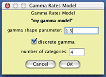
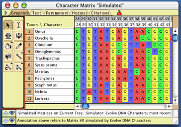
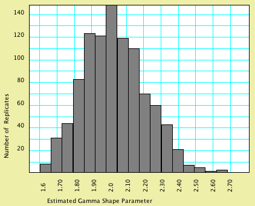
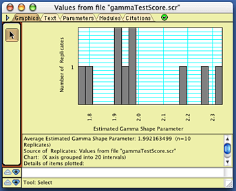

Simulating DNA sequence evolution, with examples of hypothesis testing
This section provides a brief introduction to some of the analyses you can do by simulating DNA sequence evolution, including:- Simulating DNA sequence evolution on a tree
- Building more complex models
- Batch Architect: Simulating, exporting, and analyzing multiple matrices
- Examples of tests of phylogenetic hypotheses
Example files for this chapter are in the "Character_Simulations" folder within the "examples" folder within Mesquite_Folder.
Simulating DNA sequence evolution on a tree
First, let's try evolving DNA sequences up the branches of a model tree, thereby creating an entire simulated matrix. Open the example file "01-modelTree.nex" and you will be presented with a tree. For the moment it doesn't matter where this tree came from; the important thing to note is that it has branch lengths inferred from a matrix of 18S rDNA; this matrix is also included in the file.In order to simulate DNA sequences, you need:
- A tree, with branch lengths specified. A tree with branch lengths is included in this example file.
- A specification of how the DNA sequences evolve. This model could have many elements. One common form of model specifies the relative frequencies of A, C, G, and T; the relative rates of change of the different characters; and the relative rates of change between A and C, A and G, and so on.
Creating a model of character evolution
For sake of simplicity, let's presume that A, C, G, and T occur at equal frequencies, and that all pairs of nucleotides have equal rates of change between them. To make it interesting, though, let's presume that some characters evolve more quickly than others, with the distribution of rates of change following a discrete gamma distribution with shape parameter 1.5. If one presumes (as we will) that there were four categories of rates, then this model presumes that one quarter of the characters have rate 0.225, one quarter 0.589, one quarter 1.05, and the rest 2.136, as shown in the following figure:
To create this model of character rate variation in Mesquite, choose (Tree) Characters>New Character Submodel>Gamma Rate Variation Model... You will be presented with a dialog box in which you can choose the name of the model you will create; you might call it "my gamma model". You will then be presented with a dialog box allowing you to specify the nature of the model; set the shape parameter to 1.5:

Now we need to create a composite model of character evolution that specifies both this gamma rate variation model, the state frequency model, and the state-to-state rate model. To do this, choose (Tree) Characters>New Character Model>Composite DNA Simulation Model..., name the model (perhaps call it "my full model"), and you will be presented with a dialog box in which you can choose the various submodels:

The only element of this model we will change is the character rates model; choose "my gamma model" from the drop-down menu to select the gamma distribution model you created as the model of site-to-site rate variation. The model "my full model" is now ready to use.
Note that the dialog box in which you edited "my full model" has button with a ? on it (). When a button like this is present in a Mesquite window, touching on it will display a small note with information about how to use the window's feature.
Simulating evolution
Now choose (Tree) Characters>Make New Matrix from>Simulated Matrices on Current Tree. This will ask Mesquite to simulate evolution of characters up the current tree in the tree window to produce a new matrix. You will be asked what sort of character simulator to use. As we wish to evolve a DNA sequence up the tree's branches, choose "Evolve DNA characters" from the list. (There might be other options presented, such as Evolve Continuous Characters, but we don't wish to try that now.) You will then need to chose the model of DNA sequence evolution; choose the composite one you created earlier called "full model". When it queries for the number of character, choose a large number, such as 2000. When it asks for the name of the matrix to be created, call it "simulated" (although you could choose another name, if you wish). Mesquite will then simulate evolution, and a matrix will be produced, such as this one:
Examining the results of the simulation
Let's see whether the rate variation between characters suggested by this simulated matrix matches a gamma distribution with shape parameter 1.5, as used in the model. First, save the matrix to a file so that you can read it into PAUP*. Choose (Character Matrix) Characters>Save Copy of Matrix>simulated to save a copy of your newly created matrix; perhaps name the file "Simulated Matrix".In PAUP* 4, execute the file Simulated Matrix, and then execute the following commands:
nj; lset nst=1 basefreq=equal rates=gamma shape=estimate; lscore 1;
(If you don't know how to give PAUP* commands, please read your PAUP* documentation. There are equivalent ways to give these commands in the MacOS versions using dialog boxes, but it is much easier for us to describe what to do with these text commands.)
The first command ("nj;") will find a neighbor-joining tree. While this might not be the best way to get a tree, but it will be fast, and give a tree that is good enough for our purposes. The second command ("lset...") sets the model used for likelihood calculations to be the model used by Mesquite in the simulations, except that the shape parameter used is not specified, but is instead estimated from the data. The third command ("lscore 1;") tells PAUP* to calculate the likelihood of the tree, in the course of which it will also estimate the shape parameter of the gamma distribution using likelhood. You might end up with PAUP* reporting something like this:
Tree 1 ------------------- -ln L 19742.05025 Shape 1.583552
The shape parameter should be around 1.5.
Building more complex models
More complex composite models of DNA evolution can be built by choosing among the following:Models of root state frequencies:
- Equal Frequencies: equal frequencies of states
- Empirical Frequencies: frequencies of states the same as that found in an existing character matrix
- User-specified Nucleotide Frequencies: frequencies of nucleotides specified by the user. You can create a model of this sort by choosing (Character Matrix) Characters>New Character Submodel>User-specified Nucleotide Frequencies... and then entering the appropriate values in the dialog box.
Models of equilibrium state frequencies on other branches:
- Equal Frequencies: equal frequences of states
- Empirical Frequencies: frequencies of states the same as that found in an existing character matrix
- User-specified Nucleotide Frequencies: frequencies of nucleotides specified by the user. You can create a model of this sort by choosing (Character Matrix) Characters>New Character Submodel>User-specified Nucleotide Frequencies... and then entering the appropriate values in the dialog box.
The above two submodels corresponds in PAUP* to the specifying the base frequencies in the likelihood settings; note that PAUP* does not allow separate specification of the model of frequences and the root and at other branches.
Models of rate variation among characters:
- Equal Rates: all characters evolve at the same rate.
- Codon Position Rates Model: a model specifying the relative rates of the different codon positions. If you wish to have the codon positions match those in an existing matrix, then codon positions need to be specified for a DNA matrix. To do this, choose (Character Matrix) Characters>List of Characters to see the current codon positions. Select the characters in this list window, and then touch on the title of the column "Codon Position". A drop-down menu will appear in which you can choose to set the codon positions to a sequence like 123123123... as appropriate.
- Gamma Rates Model: a model specifying that rates of characters evolve according to a gamma distribution.
- Gamma Invar Rates Model: a model specifying that a proportion of the characters are invariant, and the remainder follow a gamma distribution.
- Proportion Invariant Model: a model specifying that a proportion of the characters are invariant, and the remainder evolve at one rate.
The first model ("Equal Rates") is built in; you can create a model of the other kinds by choosing the appropriate items from the (Character Matrix) Characters>New Character Submodel menu and then entering the values in the dialog box.
Model of rate matrices:
- Single Rate: all changes between nucleotides occur at the same rate.
- Ti/Tv Rate Matrix Model: the two-parameter rate matrix model in which transversions occur at a different rate than transversions.
- GTR Rate Matrix Model: the General Time Reversible, six-parameter rate matrix model in which you can specify rates of each type of nucleotide change.
The first model ("Single Rate") is built in; you can create a model of the other kinds by choosing the appropriate items from the (Character Matrix) Characters>New Character Submodel menu and then entering the values in the dialog box.
Batch Architect: Simulating, exporting, and analyzing multiple matrices
Mesquite's Batch Architect package can be used to create multiple simulated matrices, export them to files, and create one or more files that provide instructions to programs to analyze the files produced. These instruction files are called "batch files".One could, for example, examine the quality of Mesquite's simulation algorithms by simulating 100 matrices using a gamma model of character rate variation. In addition to creating 100 files with matrices, Mesquite would create a batch file containing instructions for PAUP* to estimate the gamma shape parameter for each of the matrices and save the resulting values to a score file. Mesquite would also create an file that would provide instructions to Mesquite to allow it to read PAUP*'s score file and display the resulting distribution of estimated gamma shape parameters in a chart. As a concrete example, simulation of 1000 matrices of 2000 characters each under a model with a gamma shape parameter of 2.0, estimating of the shape parameter by PAUP* for each of these matrices, and processing of the results by Mesquite yielded the following histogram:

In this particular analysis, most matrices were estimated to have a gamma shape parameter close to that used in the model that generated the data; the average estimated gamma shape parameter over the 1000 replicates was 2.017.
Conducting multiple simulations
To conduct an analysis similar to this one, open up the example file "02-gammaTest.nex". A complete model of DNA sequence evolution has already been added to that file, under the name "gamma2model". It specifies, among other components, character rate variation following a gamma distribution with shape parameter 2.0. First, you will need to ask Mesquite to evolve several matrices up the branches of the phylogeny. Choose Analysis > Matrices & Batch Files > Export Matrices & Batch Files.... You will be presented with a choice of the source of matrices; choose "Simulated Matrices on Current Tree", and press OK; for the character simulator, choose "Evolve DNA characters". When asked to choose the model, choose "gamma2model".You will now be presented with the main dialog box that you will need to master to use Mesquite's simulation tools. It looks approximately like this:

The top part of the dialog box allows one to choose the base part of the name of the simulated matrices that will be produced, as well as to specify how many matrices will be produced (the "number of replicates"). Let's call have the file names begin with "gammaTest", so enter that for the base name. In the interests of time, you can leave the number of replicates be only 10 (a more thorough analysis would involve many more replicates).
In addition to creating the matrices, Mesquite will also produce one or two files accompanying those matrices that specify commands to be used by various software (e.g. PAUP, NONA, even Mesquite) to analyze those matrices. The manner in which these accessory files or "batch files" are written is controlled by the lower portion of the dialog box. The content of the batch files is specified by a "batch file template". There are some templates supplied by Mesquite; you can also build your own. The template we need to use for this example is not built into Mesquite; you will need to load it in from a file. To do this, go into the Templates Manager, by pressing the Edit Templates button. In the dialog that is presented, you can see the build-in templates:

To load in the template we need to use, press the Load button, and open the "GammaTest.template" file that is in the "templates" folder within the Simulations examples folder. The template Gamma Model Test will now be added to the templates list. (You can see the nature of the template by selecting it in this list and pressing "Edit", but you needn't do this now.)
Once the template is loaded, press Done to return to the Export Matrices & Batch Files dialog box. Make sure "Gamma Model Test" is selected, and press "OK". You will now be asked to choose a folder to store the created files. As multiple files will be created, you may wish to create a new, empty folder to house the files. Once the location is chosen, you will be asked (after perhaps dismissing a notice or two) for the number of characters to be simulated within each matrix. Choose a fairly high number, such as 2000. Mesquite will now proceed to create through simulation all 10 files, plus two batch files.
One of these batch files will be a file containing PAUP commands that will instruct PAUP* to read in each matrix file, quickly build a preliminary tree (using neighbor-joining, which should be good enough for our purposes), and estimate the gamma shape parameter using likelihood. The resulting value will be saved to a PAUP "scorefile". Open up PAUP* 4 (make sure you have the latest version of PAUP*), and ask it to execute the file "gammaCommands.nex". After PAUP has finished its analysis, go back to Mesquite, and choose Analysis > Batch Architect> Show Results via Instruction File.... You will be asked to first choose an "instruction file", which is a text file telling Mesquite how to interpret another file. Choose the file "MesquiteInstructions", which is the second batch file created by the Gamma Model Test template. After Mesquite processes the instruction file, it will ask you to find the results file, which in this case is the score file created by PAUP*. It should be called "gammaTestScore.scr" (if the base name of the matrices was "gammaTest"); open it when asked for the results file. You will then be presented with a histogram of the estimated gamma shape parameter values, that will look approximately like this:

Of course, your exact values should differ from these, but should cluster around 2.0. If you repeated this, but with many more replicates, then you should see a bell-shaped curve, as shown above.
Testing simulations of more complex models
A test of accuracy of Mesquite's more complex models can also be done. For example, there are seven parameters in model that includes a General Time Reversible model of DNA evolution and assuming a proportion of the characters are invariant with the remainder following a gamma distribution. In 1000 replicates of 2000 characters evolved up the branches of a 49-taxon tree, the average value of these parameters as estimated by PAUP* is close (within 1.3 %) of the value used in model used in Mesquite, as shown by the results of one particular analysis:| Parameter |
Value in model |
Estimated value |
Difference |
|---|---|---|---|
| Rate(A<->C) |
1.8700052 |
1.87771 |
0.41% |
| Rate(A<->G) |
4.2537253 |
4.26319 |
0.22% |
| Rate(A<->T) |
2.5286454 |
2.53006 |
0.06% |
| Rate(C<->G) |
0.626305 |
0.63152 |
0.83% |
| Rate(C<->T) |
8.735118 |
8.77468 |
0.45% |
| proportion invariant |
0.506903 |
0.50903 |
0.42% |
| gamma shape |
0.438522 |
0.44422 |
1.30% |
Examples of tests of phylogenetic hypotheses
You can use Mesquite's Batch Architect and Genesis packages to build your own statistical tests of various phylogenetic hypotheses. Some example tests are presented in the following pages:- Testing monophyly of a group of beetles
- Are strepsipterans related to flies? Exploring long branch attraction
Other analyses that Mesquite can do
The examples given about used the Genesis package in Mesquite to simulate the evolution of characters under a specified model of DNA evolution, and up the branches of the current tree on the screen. Many more sorts of analyses can be done, using different sources of characters other than simulated DNA data, different sources of trees other than the current tree on the screen, and different calculations by other programs.Some of the different sources of character matrices include:
- Simulators that evolve data other than DNA data, including continuously valued data.
- Random modifications of existing matrices, including by non-parametric resampling (as used in classic bootstrap methods), random reshuffling of data, and jackknifing.
Some of the different sources of trees include:
- Simulations using markovian models of speciation
- Coalescence simulations of gene trees
- Modifications of an existing tree by random modification of branch lengths
- Modifications of an existing tree by randomly pruning a fraction of the taxa or by randomly adding taxa
- Randomly sampled trees among all possible trees
- Trees generated by randomly reshuffling taxa at their tips